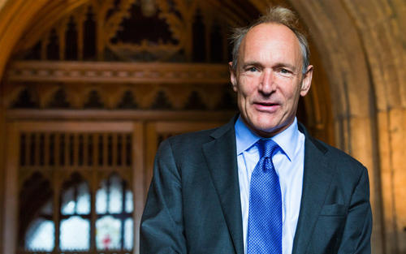
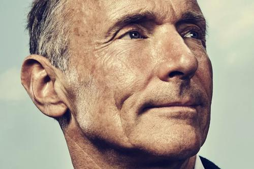
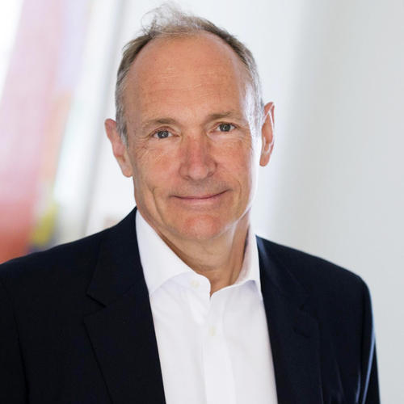

蒂姆·伯纳斯·李
蒂姆·伯纳斯·李
蒂姆·伯纳斯·李,英国计算机科学家。他是万维网的发明者，南安普顿大学与麻省理工学院教授。
重要事件
-
1980年伯纳斯－李他与罗勃·卡力奥一起建立了一个叫做ENQUIRE的原型系统。
-
1984年伯纳斯－李重返欧洲核子物理实验室，写了世界上第一个网页浏览器和第一个网页服务器。
- 1991年8月6日可以上网第一个网站由蒂姆·伯纳斯－李建立。
- 1994年伯纳斯－李在麻省理工学院创立了万维网联盟。
主要成就
- 1994年，他成为万维网名人堂的成员之一。
-
1995年，他赢得凯尔贝基金会的“年度青年发明家”奖项。同年，他获得了ACM软件系统奖。
-
1997年，在英女皇寿辰上，为表扬他在“全球计算机网络”方面作出的贡献，他获颁大英帝国官佐勋章。
- 1998年，他获得艾塞克斯大学荣誉博士学位。
- 1999年，他入选时代杂志20世纪最重要的100个人物。
-
2000年3月，他获得公开大学荣誉博士学位。 2001年，他入选美国文理科学院。
- 2002年，他入选BBC最伟大的100名英国人。
-
2003年，为表扬他对万维网发展的开创性贡献，他获颁计算机历史博物馆研究奖。
-
2004年4月15日，他获芬兰技术学院颁发千禧技术奖。奖金高达一百万欧元，奖项在同年6月15日由芬兰总统向他颁发。同年7月16日，因获颁大英帝国爵级司令，他获封为爵士。
- 2004年21日，他获得兰开斯特大学荣誉科学博士学位。
-
2005年1月27日，因他的成就，与他展示出英国人的特质，“羞怯、决心、敏锐的幽默感及良好的适应能力”，他入选2004年最伟大的英国人。
-
2007年，他获得成就学院金盘奖。同年，他与艾伯特·霍夫曼一起并列每日电讯报“最伟大的100名在生天才”榜首。同年6月13日，他获颁功绩勋章。
-
2008年，为表扬他“构思出万维网，并进一步发展万维网”，他获得了电气电子工程师学会詹姆斯·克拉克·麦克斯韦奖。
- 2008年12月2日，他获得曼切斯特大学荣誉博士学位。
-
2009年4月21日，他获得马德里技术大学荣誉博士学位。同年4月28日，他获选为美国国家科学院外籍院士。同年6月8日，因他的终生成就，他获得威比奖。颁奖仪式于纽约市举行。同年10月，他获得阿姆斯特丹自由大学荣誉博士学位。
-
2011年3月30日，他获得米哈伊尔·戈尔巴乔夫“改变世界的人”奖。同年5月26日，他获得哈佛大学荣誉科学博士学位。同年，他入选电气电子工程师学会人工智能名人堂。
-
2012年，他入选互联网名人堂。同年7月27日，他在2012年夏季奥林匹克运动会开幕典礼受到了表扬。
-
2017年，他因“发明万维网、第一个浏览器和使万维网得以扩展的基本协议和算法”而获得2016年度的图灵奖。
个人荣誉
| 年份 | 专辑名 |
|---|
| 1994年 |
万维网名人堂的成员之一 |
| 1995年 |
年度青年发明家”奖项 |
| 1997年 |
大英帝国官佐勋章 |
| 1998年 |
艾塞克斯大学荣誉博士学位 |
| 1999年 |
时代杂志20世纪最重要的100个人物 |
| 2000年 |
他获得公开大学荣誉博士学位 |
| 2001年 |
美国文理科学院 |
| 2002年 |
BBC最伟大的100名英国人 |
| 2003年 |
计算机历史博物馆研究奖 |
| 2004年 |
千禧技术奖 |
生活照



生平
1955年6月8日，伯纳斯·李（Tim Berners-Lee）出生于英格兰伦敦西南部。父亲是康威·伯纳斯·李，母亲是玛丽·李·伍兹。
他的父母都参与了世界上第一台商业电脑，曼切斯特1型（Manchester Mark I）的建造。伯纳斯-李在辛山小学（Sheen Mount Primary School）念小学，
在伦敦伊曼纽尔公学（Emanuel School）念中学。
1973年，他中学毕业，进入牛津大学王后学院深造，最后以一级荣誉获得物理学士学位。2017年，
他因“发明万维网、第一个浏览器和使万维网得以扩展的基本协议和算法”而获得2016年度的图灵奖。